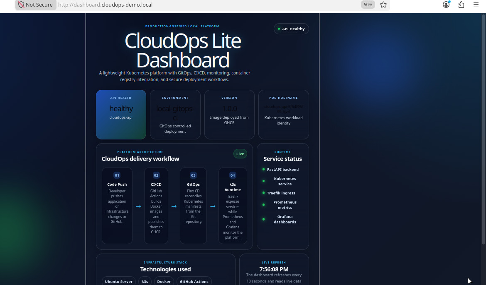

What I built
CloudOps Lite is a lightweight cloud operations platform built to demonstrate real-world DevOps and Platform Engineering practices. The project started as a local Kubernetes lab and was later deployed on Hetzner Cloud using k3s.
- Hetzner-hosted k3s Kubernetes cluster
- GitOps workflow using FluxCD
- Containerised FastAPI service deployed inside Kubernetes
- Prometheus metrics collection
- Grafana dashboards for monitoring and observability
- Custom CloudOps dashboard showing platform health and metrics
CloudOps Lite Platform Demonstration
Deployment screenshots
CloudOps Dashboard
Custom dashboard showing Hetzner k3s status, API health, Prometheus, Grafana, and platform metrics.

Architecture Diagram
High-level architecture showing GitOps workflow, Hetzner Cloud VPS, k3s cluster, FastAPI, Prometheus, and Grafana.

Hetzner Cloud
Public VPS environment hosting the Kubernetes platform and cloud operations stack.
k3s Kubernetes
Lightweight Kubernetes distribution used to run containerised services efficiently.
FluxCD GitOps
Automatic synchronisation of Kubernetes manifests from GitHub to the cluster.
FastAPI Service
Containerised API exposing health and metrics endpoints for platform validation.
Prometheus
Metrics collection system used to scrape application and infrastructure data.
Grafana
Observability dashboard layer for visualising metrics and monitoring service status.
Key features
Real Cloud Deployment
Deployed the platform on Hetzner Cloud instead of keeping it only as a local lab.
Kubernetes Operations
Managed namespaces, deployments, services, and workloads inside a k3s cluster.
GitOps Workflow
Used FluxCD to keep the cluster state synchronised with the GitHub repository.
CI/CD Ready
Structured the project for automated build, validation, and deployment workflows.
Monitoring Stack
Integrated Prometheus and Grafana to observe application health and platform metrics.
Custom Dashboard
Built a simple CloudOps dashboard to display API health, metrics, and service status.
Implementation focus
Cluster Bootstrap
Provisioned a lightweight Kubernetes environment using k3s on a Hetzner VPS.
Application Deployment
Built and deployed a FastAPI microservice with Kubernetes deployment and service manifests.
Metrics Endpoint
Exposed application metrics through a Prometheus-compatible endpoint.
Observability
Connected Prometheus and Grafana to monitor platform health and application behaviour.
Repository Structure
Organised Kubernetes manifests and application code for clean GitOps-based operations.
Cloud Migration
Migrated the project from a local Ubuntu Server lab to a public Hetzner Cloud deployment.
What the project proves
- Ability to deploy Kubernetes workloads on a real cloud VPS
- Understanding of GitOps-based infrastructure management
- Experience with monitoring and observability tools
- Ability to expose health checks and metrics from an application
- Knowledge of cloud deployment, containerisation, and platform operations